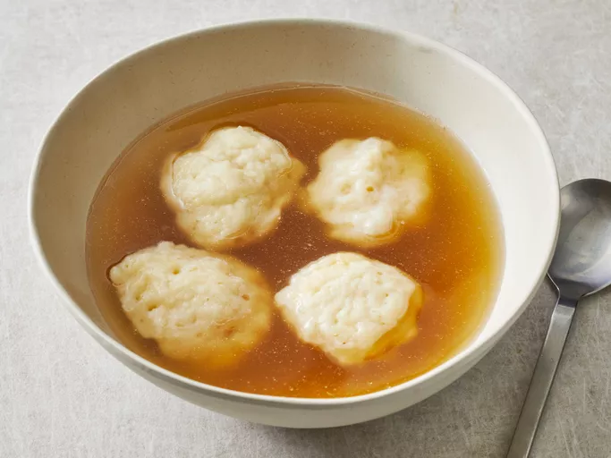

Chelton's Hardy Homemade Dumplings

Quick and filling dumplings
Utilizing this recipe, you will uncover the wonders of sweet and savory!
Ingredient List:
- 1 cup all-purpose flour
- 2 teaspoons baking powder
- 1 teaspoon white sugar
- 1/2 teaspoon salt
- 1 tablespoon butter or margarine
- 1/2 cup milk
Steps to Make:
- Stir together flour, baking powder, sugar, and salt in a bowl.
- Cut in butter until mixture is crumbly. Stir in milk and mix until a batter forms that is thick enough to be scooped with a spoon. Allow batter to rest for 3 to 5 minutes.

- Drop batter by spoonfuls into boiling stew or soup. Cover and simmer without lifting the lid for 15 minutes. Serve.
- Serve hot and enjoy!